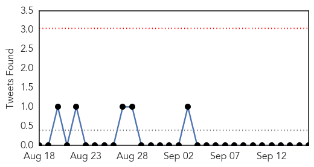

30 Day Trends
Web: 1 alerts, 0 warnings
Twitter: 0 alerts, 0 warnings
Top Articles:
- 0.999
- Haiti Cholera Response: Mid-Year Update (January - July 2014) - Haiti
- 0.913
- Pakistan, India Flood Leaves Health Risks in Its Wake
- 0.881
- Stop politicizing health issues-Dr. Frempong
- 0.797
- Stagnant floodwater raising health risk in Kashmir
- 0.794
- People of Kashmir face risk of serious disease in wake of devastating floods
- 0.772
- Dirty water raising health risk in flooded Kashmir
- 0.731
- Stagnant floodwater raising health risk in Kashmir
- 0.687
- Stagnant floodwater raising health risk in Kashmir
- 0.681
- Stagnant floodwater raising health risk in Kashmir
- 0.649
- Stagnant floodwater raising health risk in Kashmir
- 0.557
- Mahama calls for end to open defecation
- 0.502
- Stagnant floodwater raising health risk in Kashmir
Top Tweets:
-
No tweets found for Sep 16, 2014
Web/News Articles

Tweets
Article Locations